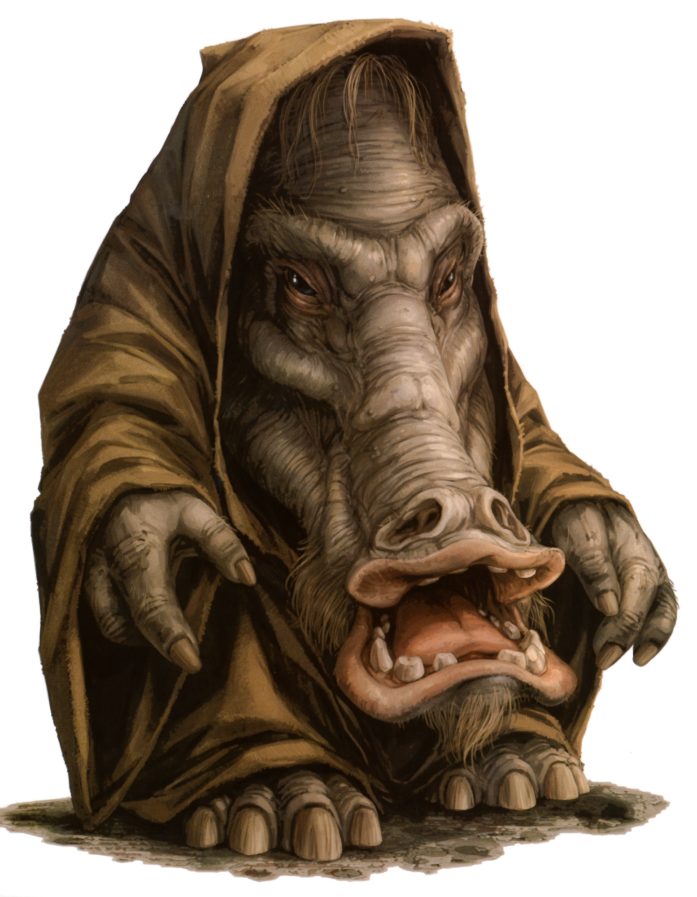

Chevin
Special Abilities: Chevin begin the game with one rank in Negotiation. They still may not train Negotiation above rank 2 during character creation.
Advanced Olfaction: Though it originally developed to track prey, a Chevin's keen sense of smell can be valuable in many situations. Add ■ to Perception checks involving the sense of smell.
Thick Hide: A Chevin's hide is thick and tough enough to absorb some damage, so they start the game with one rank in the Durable talent.
The Chevin are solidly built and hard to overlook, being taller than humans and nearly twice as wide. They have large, leathery faces and long, prominent snouts. Their impervious gray skin stretches over thick, muscular limbs, and their sense of smell is refined enough to identify a case of colored water ina shipment of booster blue. Once a species of hunters, Chevin are now renowned for hunting credits, a task for which they are uniquely skilled.
Trade is an important activity for Chevin, whether among themselves or on an interplanetary scale. They pride themselves on their business acumen, and consider wealth tantamount to prestige. Their main exports are slaves and slave-related technology, the only technology they have developed themselves. The Empire is the main customer for the latter. For this reason most Chevin consider the Empire good for business, and so accept and support Palpatine's New Order.
Chevin have developed a reputation for ruthlessness among other species. They drive a hard bargain, and their opportunist natures mean they capitalize on those in need. By Chevin standards, if a colony is willing to pay more than foodstuffs are worth to avoid starvation, the merchant should charge more. If the captain of a starship needs a spare part immediately or risks capture by Imperials, to ask a less than extortionate price makes no business sense. Chevin etiquette demands honesty, not mercy.
In a culture so obsessed by commerce, honesty plays a vital role. After all, honesty is an essential component of trust. Without trust, the trading and exchanging between Chevin villages would break down. As a result, the Chevin moral code requires them to be scrupulously honest, and so Chevin never fail to keep their side of a bargain. On the other hand, they expect the same values to be upheld by other species they deal with, and when double-crossed, they prove violent and unrelenting in seeking revenge.
Chevin are strong and tough, with thick hides that are both insulating and insensitive. They absorb damage, and it takes a lot to injure a Chevin or even cause him pain. Few humanoid species could successfully tackle a Chevin with anything less than a blaster. Fortunately, though they are by nature aggressive, given the choice Chevin are more likely to negotiate than fight. They earn more credits that way.
The double-lidded eyes of the Chevin allow them to see in sandstorms or blizzards. They once used their long snouts to track prey, and so their sense of smell is highly developed. Now they are more likely to use it to check the quality of goods than to followa backshin's trail.
On Vinsoth, the Chevin evolved alongside the Chevs, the other sentient species on the planet. The Chevin, being more aggressive and hardier fighters, long ago conquered and enslaved their near-human neighbors. Chevin were once hunter-gatherers, but as slavers they have come to rely on the Chevs.Their slaves manufacture and farm for them, while the Chevin have become expert traders and delegators who like to be in charge. Chevin demand respect and thrive in positions of dominance, making them well suited to leadership roles. They have a knack for sensing the potential in other individuals and putting it to good use.
A migratory species, the Chevin live in moving villages, using vehicles called "lodges" to transport their families and goods while their slaves walk alongside. Although Chevin dictators never leave the planet's capital cities, Chevin villages rarely stay in the same place for long. It is therefore is no surprise that Chevin are happy to leave their homeworld to trade, making their home wherever they happen to be.
It is telling of Chevin society that the more aggressive of them tend to rise higher and do better, becoming the leaders in politics and business. However, a Chevin would counter that this tends to be true wherever he finds himself. Thegalaxy isa dangerous and unforgiving place, and so the Chevin must be strong and ruthless to survive. This grim outlook is a typical Chevin trait, and means that the majority of their relationships with other species are business relationships.
The Chevin homeworld of Vinsoth is in the Outer Rim. The terrain varies widely across the planet, from ice caps at the poles to deserts, mountains, and prairies. Though the Chevin can live almost anywhere thanks to their strong constitution, on Vinsoth they tend to roam on the vast grassy plains.
The official language of Vinsoth is Chevin. Most Chevin also learn to speak Basic for the benefit of trade and travel. They also ensure that their slaves speak both Chevin and Basic.
The pursuit of credits takes Chevin all over the galaxy, and involves them in a multitude of different enterprises and projects. Some travel with slaves, depending on their outlook and prestige. They go to great lengths to realize opportunities, traveling vast distances to inhospitable and remote planets to reach desperate customers, or navigating war zones to smuggle illegal goods. It helps that their physiology equips them to survive and thrive in even the roughest environment. Chevin are practical and d o what they have to in order to make a profit, be it smuggle, gamble, trade, slave, or fight for credits.
Chevin have an uncanny ability to find gaps in the market, and a willingness to do whatever it takes to fill them, legal or otherwise. As a result, they often operate outside the reach of Imperial law. There are even rumors of Chevin among the Rebels, though these Chevin invite the disapproval of their kin at home. The Chevin make strong, resilient fighters, and some take jobs as mercenaries. Notably, Jabba the Hutt employs a Chevin, Ephant Mon, as head of security. When encountering Chevin anywhere, travelers should remember that they are better to work with than against.
There are two sentient species on Vinsoth, the Chevin and the Chevs, and the former keep the latter as slaves. The Chevin used their skills as hunters to enslave the Chevs, and it is still the threat of violence that keeps them subjugated. Most Chevin are content with this arrangement, considering slavery necessary and their treatment fair. There has occasionally been pressure from extremist Chevin to liberate the Chevs. However, this is often because they consider the situation detrimental to the development of the Chevin, rather than for moral reasons.
Some of the Chevin who do disapprove of the slavery speak out, with little effect, while others leave Vinsoth behind and make their homes elsewhere. Reputedly, a few have even joined the Rebel Alliance in an effort to make changes not only to their homeworld, but to the whole of the Empire.